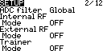
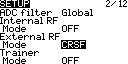
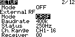

{% extends "article.html" %}

{% block title %}
<h1>安装高频头</h1>
{% endblock %}

{% block content %}
<style>
    img {
        border: 2px solid black;
    }
</style>
<h2 id="a">根据遥控器的高频头安装接口、通信协议、所需的遥控频段、发射功率等因素选择合适的高频头</h2>
<h2 id="b">将高频头插入遥控器的高频头插座</h2>
<h2 id="c">进入模型设置菜单，找到Internal RF选项，将其设置为OFF</h2>

<h2 id="d">找到External RF选项，将其设置为高频头的协议</h2>

<h2 id="e">如果选择的协议有参数可以设置，将会显示相关设置</h2>

<h2 id="f">此时外置高频头已经安装完成，使用方式与内置高频头相同</h2>
{% endblock %}